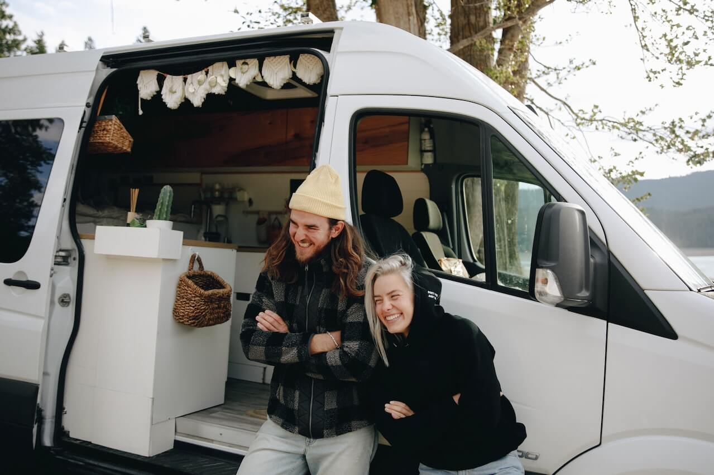

Absolute Freedom - You can go anywhere you want and wake up to a new view everyday
More at one with the World - Being able to stop in the most remote destinations, out of the city
life hustle, connecting more with nature
Being part of something great - The van life community is an all inspiring, friendly and welcoming
family of adventure
Minimalism - Letting go of unnecessary clutter and learning to live with the bare essentials
Eco-friendly - Living in a van, helps you think about things like reducing waste because you have
such limited resources, in turn helping lower your carbon footprint

Vanlife Hacks
Build your trips up - You do not have to jump right in with the biggest van adventure trip. Start
off with smaller trips to get used to vanlife and build yourself up
Plan your overnight stays - If you can, look to plan your overnight stays ahead of your journey, so
you can benefit from free campsites or wild camping spots
Simple is better - Being on the road with a limited size cooking space, it's best to aim for simple
meals that can be cooked in small & limited spaces
Stealth Camping - In those unforeseen circumstances where you cannot find a place to stay, in an
urban area or city, you may be able to go under the rader by parking up in a place late at night and
leaving really early to go by undetected
Let your home on wheels breathe - wherever possible, depending on the weather, try to keep a window
open, even just slightly. This will help with the condensation build up